Scheda audio · deck veloci corsi il 2026-09-27 (L42a) sul circuito di L28 · mute da L29d2, L29e e L41b2 · interblocco da L35 e L36 · calore da L30
Classe A pura a componenti discreti, senza operazionali nel percorso del segnale. Guadagno 0 / +3 / +10 dB, trim 0 / −6 / −12 dB sull’uscita variabile, mute graduale a LDR a monte e relè al jack. Questa pagina racconta la scheda audio; l’alimentatore è la seconda scheda.
.include dei deck, non dichiarata.Il progetto sostituisce un Technics SU-9070 la cui struttura di guadagno richiede 46 dB di attenuazione, causa misurabile della mancanza di dinamica lamentata. La topologia canonica è in circuits/preamp/; i banchi di prova in spice/preamp/tb/; i dati dei deck veloci in docs/preamp/data/2026-09-27/L42/dopo/, corsi oggi sul circuito di main; quelli del mute, dell’interblocco e del calore nelle cartelle dei loro lotti, nominate sotto ogni sezione.
Il blocco è uno solo (ADR-006) e il prodotto lo usa otto volte: per canale, il blocco A (buffer d’ingresso), i due buffer delle uscite fisse (ADR-023) e il blocco B (uscita variabile). È l’oggetto da giudicare.
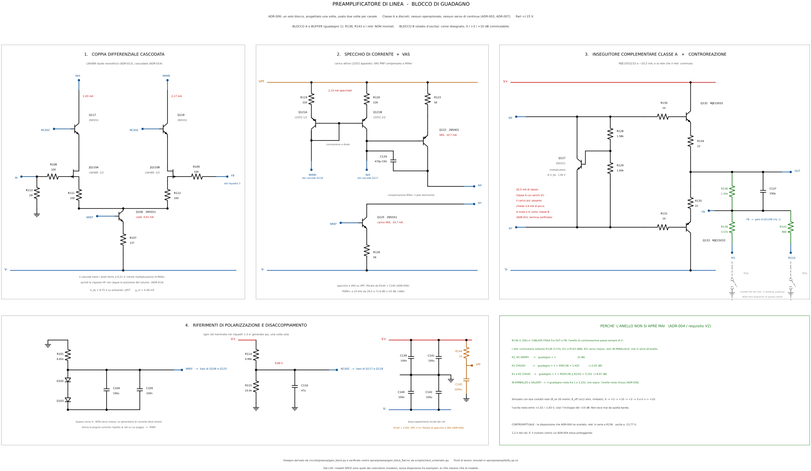
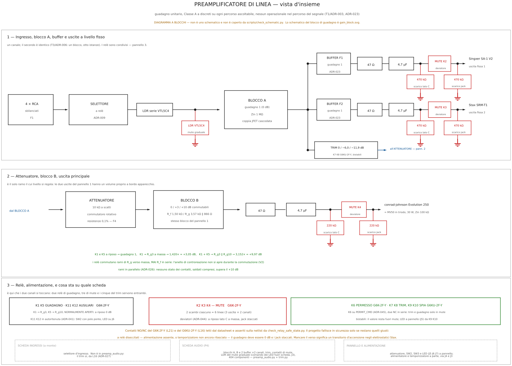
Deck spice/preamp/tb/tb_op.cir · dati docs/preamp/data/2026-09-27/L42/dopo/tb_op/
Modelli del costruttore: 1N4148, LS352, LSK489, MJE15032, MJE15033, MMBT5401, MMBT5551 · segnaposto scritti a mano: nessuno · rumore 1/f solo su LSK489, KF = 0 sugli altri (NC-004)
Corrente dai rail e punto di lavoro di ogni dispositivo attivo, a ingresso a massa. Il trim sta dopo il condensatore d’uscita del blocco A e non tocca la continua.
| Grandezza | Valore |
|---|---|
| Corrente dal rail +15 V | 32,5947 mA |
| Corrente dal rail −15 V | 33,6152 mA |
| Dispositivo | IC / ID [mA] | VBE / VGS [V] | VBC [V] |
|---|---|---|---|
| JQ110A | 2,2819 | -0,1308 | — |
| JQ110B | 2,2378 | -0,1405 | — |
| Q106 | 4,5197 | 0,7044 | -12,716 |
| Q117 | 2,2609 | 0,6873 | -3,459 |
| Q118 | 2,2172 | 0,6868 | -3,5564 |
| Q121A | -2,2046 | 0,7037 | 0,5093 |
| Q121B | -2,2081 | 0,7036 | 0,4205 |
| Q122 | -6,7972 | 0,6579 | -12,6155 |
| Q125 | 6,6872 | 0,7147 | -11,4851 |
| Q127 | 5,8315 | 0,7121 | -0,2746 |
| Q132 | 20,291 | 0,5658 | -13,997 |
| Q133 | -20,401 | 0,5389 | -13,9872 |
Deck spice/preamp/tb/tb_ac.cir · dati docs/preamp/data/2026-09-27/L42/dopo/tb_ac/
Modelli del costruttore: 1N4148, LS352, LSK489, MJE15032, MJE15033, MMBT5401, MMBT5551 · segnaposto scritti a mano: nessuno · rumore 1/f solo su LSK489, KF = 0 sugli altri (NC-004)
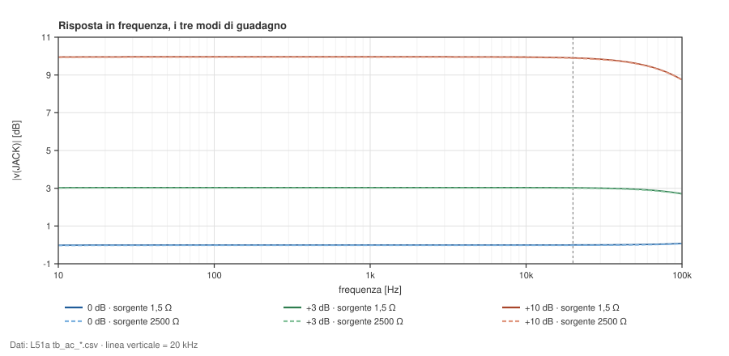
| Curva | 20 Hz | 1 kHz | 20 kHz | 100 kHz |
|---|---|---|---|---|
| 0 dB · sorgente 1,5 Ω (K11) | −0,0096 dB | −0,0070 dB | −0,0039 dB | 0,0557 dB |
| 0 dB · sorgente 2500 Ω (attenuatore a metà) | −0,0313 dB | −0,0287 dB | −0,0254 dB | 0,0367 dB |
| +3 dB · sorgente 1,5 Ω (K11) | 3,0367 dB | 3,0393 dB | 3,0137 dB | 2,4624 dB |
| +3 dB · sorgente 2500 Ω (attenuatore a metà) | 3,0150 dB | 3,0176 dB | 2,9922 dB | 2,4441 dB |
| +10 dB · sorgente 1,5 Ω (K11) | 9,9604 dB | 9,9627 dB | 9,8286 dB | 7,4663 dB |
| +10 dB · sorgente 2500 Ω (attenuatore a metà) | 9,9387 dB | 9,9410 dB | 9,8073 dB | 7,4496 dB |
L’attenuatore a gradini ha un’impedenza d’uscita che varia con la manopola. Se il cascode d’ingresso fa il suo lavoro, la forma della risposta non si muove: la risposta a 20 kHz riferita a quella a 1 kHz resta la stessa con la sorgente a 1,5 Ω e a 2500 Ω, in ogni modo.
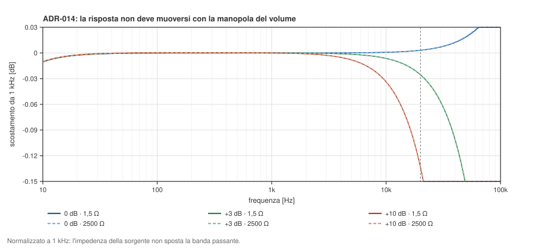
| Modo | scarto assoluto a 1 kHz | scarto assoluto a 20 kHz | 20 kHz riferito a 1 kHz — la claim |
|---|---|---|---|
| 0 dB | −0,02167 dB | −0,02157 dB | 1,07·10−4 dB |
| +3 dB | −0,02167 dB | −0,02152 dB | 1,51·10−4 dB |
| +10 dB | −0,02167 dB | −0,02135 dB | 3,29·10−4 dB |
Ogni scarto è «sorgente 2500 Ω meno sorgente 1,5 Ω». Le colonne di scarto assoluto coincidono a 1 kHz e a 20 kHz perché sono una perdita di livello a banda larga, il partitore fra la sorgente e la Zin del blocco: non misurano la claim. La claim è l’ultima colonna.
Con il carico Stax-like da 50 kΩ: −0,0148 dB a 1 kHz, −0,0223 dB a 20 Hz, −0,1329 dB a 5 Hz. Il polo è quello del condensatore d’uscita da 4,7 µF (E8, ADR-007).
Deck spice/preamp/tb/tb_loop.cir · dati docs/preamp/data/2026-09-27/L42/dopo/tb_loop/ (blocco B)
Modelli del costruttore: 1N4148, LS352, LSK489, MJE15032, MJE15033, MMBT5401, MMBT5551 · segnaposto scritti a mano: nessuno · rumore 1/f solo su LSK489, KF = 0 sugli altri (NC-004)
Deck spice/preamp/tb/tb_loop_blockA.cir · dati docs/preamp/data/2026-09-27/L42/dopo/tb_loop_blockA/ (blocco A)
Modelli del costruttore: 1N4148, LS352, LSK489, MJE15032, MJE15033, MMBT5401, MMBT5551 · segnaposto scritti a mano: nessuno · rumore 1/f solo su LSK489, KF = 0 sugli altri (NC-004)
Deck spice/preamp/tb/tb_loop_bufferfissa.cir · dati docs/preamp/data/2026-09-27/L42/dopo/tb_loop_bufferfissa/ (buffer delle fisse)
Modelli del costruttore: 1N4148, LS352, LSK489, MJE15032, MJE15033, MMBT5401, MMBT5551 · segnaposto scritti a mano: nessuno · rumore 1/f solo su LSK489, KF = 0 sugli altri (NC-004)
Soglia: 60° su ogni combinazione della matrice (ADR-019). Dove si applica la sonda lo dice ADR-024: la sonda capacitiva è il cavo d’interconnessione e sta al jack, dopo i 47 Ω e il 4,7 µF, sul blocco B e sui buffer delle fisse; il verdetto è il minimo sulla spazzata fino a 4,7 nF, non il valore a 4,7 nF. Il blocco A pilota il cablaggio interno fino all’attenuatore e si giudica con una capacità realistica, ≤ 1 nF. La sonda sul nodo d’uscita resta come informazione.
Iniezione di tensione al gate del JFET invertente: quel nodo non assorbe corrente e la rete di controreazione lo pilota a bassa impedenza, quindi l’iniezione semplice è esatta. I relè commutano la rete di controreazione, quindi il margine è diverso nei tre modi, e l’impedenza dell’attenuatore cambia con la manopola: per questo si spazza tutto.
| Istanza | Dove cade il minimo | Minimo della spazzata | A 4,7 nF | Sonda sul nodo | Esito |
|---|---|---|---|---|---|
| Blocco B · 0 dB | sorgente 2,611 kΩ · carico 100 kΩ · cavo 4,7 nF | 62,076° | 62,076° | 57,992° | conforme |
| Blocco B · +3 dB | sorgente 2,611 kΩ · carico 100 kΩ · cavo 4,7 nF | 76,197° | 76,197° | 73,114° | conforme |
| Blocco B · +10 dB | sorgente 2,611 kΩ · carico 100 kΩ · cavo 4,7 nF | 96,655° | 96,655° | 96,576° | conforme |
| Blocco A · trim 0 dB | sorgente 430 Ω · cablaggio 1 nF | 67,749° | — | — | conforme |
| Blocco A · trim −6 dB | sorgente 430 Ω · cablaggio 1 nF | 69,910° | — | — | conforme |
| Blocco A · trim −12 dB | sorgente 430 Ω · cablaggio 1 nF | 70,058° | — | — | conforme |
| Buffer delle fisse | carico 50 kΩ · cavo 4,7 nF | 63,214° | — | 58,156° | conforme |
Blocco B: 110 righe per modo al jack, sorgenti dell’attenuatore da 1 mΩ a (10 kΩ + Thévenin del trim)/4, carichi 100 kΩ e 10 kΩ. Il Miller è da 1 nF (ADR-042): con i modelli del costruttore il blocco a guadagno unitario era sceso sotto i 60° (NC-034, chiusa). Blocco A: scala 845 / 464 / 464 Ω; senza trim il minimo è 67,683° (sorgente 430 Ω, 1 nF). Con 4,7 nF sul cablaggio, che ADR-024 non chiede, il blocco A a trim 0 dB scende a 58,38°.
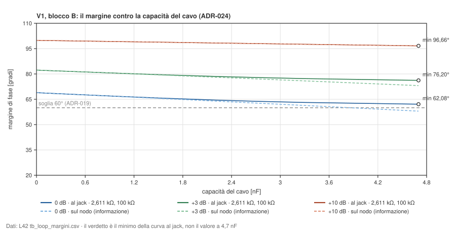
Al jack il margine non è monotono: a 0 dB il minimo, 62,08°, cade a 4,7 nF, e a 4,7 nF la stessa curva risale a 62,08°. Letto a 4,7 nF il verdetto sarebbe ottimista. Sul nodo, dove nessun cavo vero sta, lo stesso blocco scende a 57,99°.
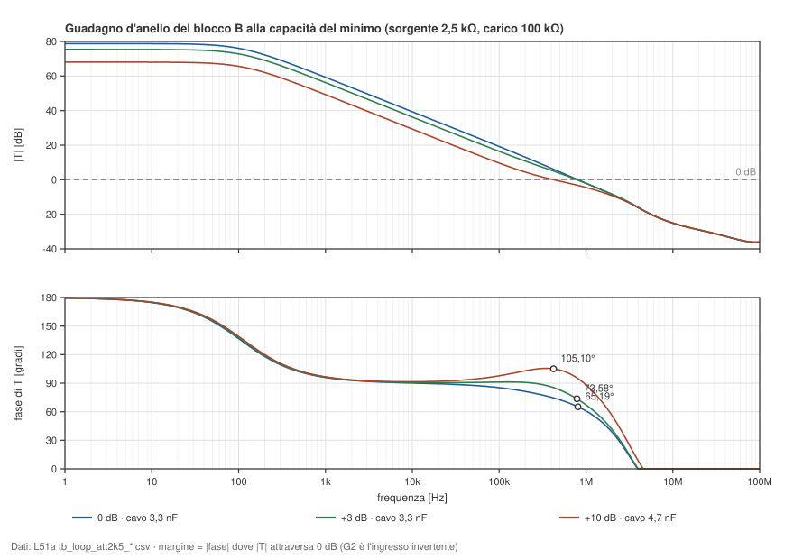
| Blocco B, sorgente 2,5 kΩ, carico 100 kΩ | |T| a 10 Hz | frequenza d’incrocio | margine |
|---|---|---|---|
| 0 dB · cavo 4,7 nF | 81,19 dB | 411,229 kHz | 62,090° |
| +3 dB · cavo 4,7 nF | 77,71 dB | 354,434 kHz | 76,209° |
| +10 dB · cavo 4,7 nF | 70,26 dB | 152,42 kHz | 96,661° |
Deck spice/preamp/tb/tb_trim.cir · dati docs/preamp/data/2026-09-27/L42/dopo/tb_trim/
Modelli del costruttore: 1N4148, LS352, LSK489, MJE15032, MJE15033, MMBT5401, MMBT5551 · segnaposto scritti a mano: nessuno · rumore 1/f solo su LSK489, KF = 0 sugli altri (NC-004)
Il trim è uno solo, fra l’uscita del blocco A e l’attenuatore (ADR-027): le uscite fisse prendono il segnale prima di lui e restano copia fedele della sorgente. Scala per canale 845 / 464 / 464 Ω, a relè bistabili. L’attenuazione è misurata col carico dell’attenuatore.
| Posizione | Attenuazione a 1 kHz |
|---|---|
| 0 dB | −0,0001 dB |
| −6 dB | −6,0030 dB |
| −12 dB | −11,9394 dB |
E3 chiede ≥ 100 kΩ al connettore d’ingresso in ogni posizione del trim, sul minimo di |Zin| fra 20 Hz e 20 kHz («Nota su E3»). Col trim sul ramo variabile il connettore vede il blocco A; la capacità del selettore è spazzata.
| Posizione del trim | selettore 1 fF | selettore 22 pF | selettore 68 pF | Esito |
|---|---|---|---|---|
| senza trim (riferimento) | 998,523 kΩ | 341,975 kΩ | 120,054 kΩ | — |
| 0 dB | 998,554 kΩ | 341,976 kΩ | 120,054 kΩ | conforme |
| −6 dB | 998,55 kΩ | 341,976 kΩ | 120,054 kΩ | conforme |
| −12 dB | 998,549 kΩ | 341,976 kΩ | 120,054 kΩ | conforme |
Deck docs/preamp/data/2026-09-26/L41b2/e3_e5/tb_e3_e5_ldr_cima12mA.cir · dati docs/preamp/data/2026-09-26/L41b2/e3_e5/ · copia del deck di L29b2 con la cima a 12 mA (ADR-050), fatta in L41b2
Modelli del costruttore: 1N4148, LS352, LSK489, MJE15032, MJE15033, MMBT5401, MMBT5551 · segnaposto scritti a mano: nessuno · rumore 1/f solo su LSK489, KF = 0 sugli altri (NC-004)
Il mute graduale mette due LDR all’ingresso del blocco A (ADR-039): una in serie, una verso massa. In ascolto la cella in serie è accesa e vale 113,485 Ω; la derivazione è spenta. Il minimo di |Zin| su ogni posizione del trim:
| Stato delle LDR | selettore 1 fF | selettore 22 pF | selettore 68 pF | Esito |
|---|---|---|---|---|
| in ascolto (serie a 12 mA, derivazione spenta) | 764,482 kΩ | 277,605 kΩ | 110,715 kΩ | conforme |
| a metà del profilo | 2003 kΩ | 324,871 kΩ | 116,394 kΩ | conforme |
| in mute (derivazione a 12 mA) | 1551 kΩ | 304,464 kΩ | 113,575 kΩ | conforme |
| Catena col trim, peggiore su trim, modo, attenuatore e sorgente | Rumore |
|---|---|
| LDR in curva B (tipica) | 5,033 µV |
| LDR in curva D (la più resistiva) | 5,049 µV |
| senza LDR | 4,996 µV |
Deck spice/preamp/tb/tb_zout_psrr_noise.cir · dati docs/preamp/data/2026-09-27/L42/dopo/tb_zout_psrr_noise/
Modelli del costruttore: 1N4148, LS352, LSK489, MJE15032, MJE15033, MMBT5401, MMBT5551 · segnaposto scritti a mano: nessuno · rumore 1/f solo su LSK489, KF = 0 sugli altri (NC-004)
Deck spice/preamp/tb/tb_noise_breakdown.cir · dati docs/preamp/data/2026-09-27/L42/dopo/tb_noise_breakdown/
Modelli del costruttore: 1N4148, LS352, LSK489, MJE15032, MJE15033, MMBT5401, MMBT5551 · segnaposto scritti a mano: nessuno · rumore 1/f solo su LSK489, KF = 0 sugli altri (NC-004)
E5 chiede meno di 10 µV RMS in uscita fra 20 Hz e 20 kHz, non pesati, e di questi 1 µV è la quota dell’alimentazione (ADR-020). Ogni totale è ricontrollato integrando lo spettro versionato.
| Blocco da solo, uscita al jack | Rumore 20 Hz–20 kHz |
|---|---|
| A) 0 dB, sorgente 1 Ω — blocco A intrinseco | 1,176 µV |
| B) 0 dB, sorgente 430 Ω — blocco A sul phono | 1,235 µV |
| C) 0 dB, sorgente 2500 Ω — blocco B | 1,486 µV |
| E) +3 dB, sorgente 2500 Ω — blocco B | 2,033 µV |
| D) +10 dB, sorgente 2500 Ω — blocco B, caso peggiore | 4,270 µV |
| 0 dB · sorgente 430 Ω (phono) | 1,235 µV |
| +3 dB · sorgente 430 Ω | 1,661 µV |
| +10 dB · sorgente 430 Ω | 3,395 µV |
La catena col trim: blocco A, trim, attenuatore, blocco B, sorgente phono (430 Ω) o K11 (1,5 Ω), attenuatore al massimo o a metà corsa, tre modi. Per ogni posizione del trim la cella peggiore:
| Trim | Cella peggiore | Rumore | Esito contro 10 µV |
|---|---|---|---|
| senza trim (riferimento) | +10 dB · attenuatore al massimo · sorgente 430 Ω | 4,996 µV | — |
| 0 dB | +10 dB · attenuatore al massimo · sorgente 430 Ω | 4,996 µV | sotto soglia — pavimento, NC-004 |
| −6 dB | +10 dB · attenuatore a metà · sorgente 430 Ω | 4,417 µV | sotto soglia — pavimento, NC-004 |
| −12 dB | +10 dB · attenuatore a metà · sorgente 430 Ω | 4,329 µV | sotto soglia — pavimento, NC-004 |
Deck spice/preamp/tb/tb_dc_headroom.cir · dati docs/preamp/data/2026-09-27/L42/dopo/tb_dc_headroom/
Modelli del costruttore: 1N4148, LS352, LSK489, MJE15032, MJE15033, MMBT5401, MMBT5551 · segnaposto scritti a mano: nessuno · rumore 1/f solo su LSK489, KF = 0 sugli altri (NC-004)
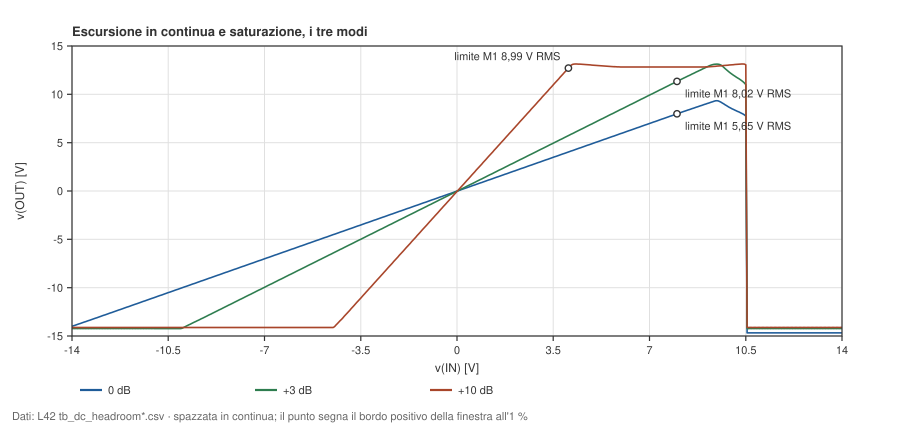
| Modo | Guadagno a 0 V | Finestra all’1 % in ingresso | v(OUT) ai bordi | Limite lineare | Saturazione |
|---|---|---|---|---|---|
| 0 dB | 0,99990 × | −13,20 … 8,00 V | −13,213 … 7,984 V | 5,6453 V RMS | 6,6073 V RMS |
| +3 dB | 1,41995 × | −9,25 … 8,00 V | −13,155 … 11,338 V | 8,0169 V RMS | 9,2816 V RMS |
| +10 dB | 3,15106 × | −4,15 … 4,05 V | −13,123 … 12,713 V | 8,9892 V RMS | 9,2904 V RMS |
I modi non saturano allo stesso livello, e la differenza non sta nello stadio d’uscita: a guadagno unitario v(FB) insegue v(OUT), il modo comune della coppia d’ingresso sale con l’uscita e si ferma per primo; con più guadagno v(FB) è una frazione di v(OUT) e l’uscita arriva più in alto. È una proprietà della topologia; i valori esatti dipendono dai modelli.
Il caso che preoccupa è E6 × E2: il FiiO K11 a fondo scala dà 2,7 V RMS, e con rail a ±15 V (ADR-015) il +10 dB non ha quasi margine senza trim. La cifra pubblicata usa una metrica, M1, scelta in L16:
| Modo | trim 0 dB | trim −6 dB | trim −12 dB |
|---|---|---|---|
| M1 · 0 dB | +6,41 dB | +12,41 dB | +18,35 dB |
| M1 · +3 dB | +6,41 dB | +12,41 dB | +18,35 dB |
| M1 · +10 dB | +0,48 dB | +6,48 dB | +12,42 dB |
La cifra per NC-009 è +6,48 dB: +10 dB, trim a −6 dB, metrica M1. Il caso raggiungibile per errore, +10 dB col trim a 0 dB, lascia +0,48 dB; il LED del trim (ADR-027) lo rende visibile.
Le altre due cifre che circolavano misurano cose diverse, e restano solo etichettate:
| +10 dB | trim 0 dB | trim −6 dB | trim −12 dB |
|---|---|---|---|
| M1 — 1 % contro il richiesto misurato — la cifra | +0,48 dB | +6,48 dB | +12,42 dB |
| M2 — saturazione contro il richiesto nominale (ADR-015) | +0,73 dB | +6,73 dB | +12,73 dB |
| M3 — 1 % contro il richiesto nominale (dossier fino a L32) | +0,45 dB | +6,45 dB | +12,45 dB |
Deck spice/preamp/tb/tb_zout_psrr_noise.cir · dati docs/preamp/data/2026-09-27/L42/dopo/tb_zout_psrr_noise/
Modelli del costruttore: 1N4148, LS352, LSK489, MJE15032, MJE15033, MMBT5401, MMBT5551 · segnaposto scritti a mano: nessuno · rumore 1/f solo su LSK489, KF = 0 sugli altri (NC-004)
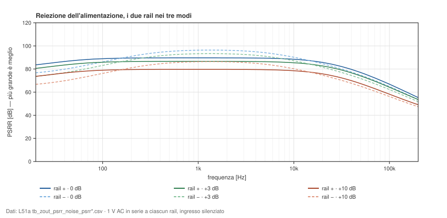
| Rail e modo | 100 Hz | 1 kHz | 10 kHz | 100 kHz |
|---|---|---|---|---|
| rail + · 0 dB | 72,60 dB | 52,96 dB | 32,96 dB | 12,92 dB |
| rail + · +3 dB | 69,55 dB | 49,91 dB | 29,93 dB | 10,51 dB |
| rail + · +10 dB | 62,63 dB | 42,99 dB | 23,03 dB | 5,51 dB |
| rail − · 0 dB | 83,23 dB | 95,43 dB | 86,40 dB | 56,05 dB |
| rail − · +3 dB | 80,18 dB | 92,38 dB | 83,35 dB | 53,64 dB |
| rail − · +10 dB | 73,26 dB | 85,44 dB | 76,44 dB | 48,63 dB |
Il lato debole è il rail positivo a +10 dB: 23,03 dB a 10 kHz. La quota di ripple che l’alimentatore può lasciare si ricava da queste curve («Nota su E5 — la quota del ripple», ADR-020).
Deck spice/preamp/tb/tb_e4_uscite.cir · dati docs/preamp/data/2026-09-27/L42/dopo/tb_e4_uscite/
Modelli del costruttore: 1N4148, LS352, LSK489, MJE15032, MJE15033, MMBT5401, MMBT5551 · segnaposto scritti a mano: nessuno · rumore 1/f solo su LSK489, KF = 0 sugli altri (NC-004)
E4 chiede un’impedenza d’uscita < 100 Ω in banda passante, misurata escludendo la reattanza del condensatore d’accoppiamento, e costante con la posizione del volume. Il deck porta la catena intera in subckt: blocco A, buffer delle fisse, trim, attenuatore, blocco B. Inietta 1 A AC in un jack per volta, a sorgente spenta, in ogni cella di trim × attenuatore × modo. «Escludendo la reattanza» si legge come Re(Z) al jack: il condensatore in serie è reattanza pura, e nella parte reale resta lo scarico in parallelo, che pesa a 20 Hz.
| Uscita | Celle | Re(Z) max, 20 Hz–20 kHz | Re(Z) 1 kHz | |Z| 1 kHz | nodo, 1 kHz | dispersione su trim × attenuatore | Esito |
|---|---|---|---|---|---|---|---|
| principale · 0 dB | 15 | 60,0371 Ω | 47,0181 Ω | 57,9254 Ω | 0,0366 Ω | 0 Ω | conforme |
| principale · +3 dB | 15 | 60,0467 Ω | 47,0278 Ω | 57,9263 Ω | 0,052 Ω | 0 Ω | conforme |
| principale · +10 dB | 15 | 60,0864 Ω | 47,068 Ω | 57,9304 Ω | 0,1154–0,1155 Ω | 0 Ω | conforme |
| fissa 1 · tre modi | 45 | 53,1186 Ω | 47,0207 Ω | 57,932 Ω | 0,0366 Ω | 0 Ω | conforme |
| fissa 2 · tre modi | 45 | 53,1186 Ω | 47,0207 Ω | 57,932 Ω | 0,0366 Ω | 0 Ω | conforme |
Deck spice/preamp/tb/tb_zout_psrr_noise.cir · dati docs/preamp/data/2026-09-27/L42/dopo/tb_zout_psrr_noise/
Modelli del costruttore: 1N4148, LS352, LSK489, MJE15032, MJE15033, MMBT5401, MMBT5551 · segnaposto scritti a mano: nessuno · rumore 1/f solo su LSK489, KF = 0 sugli altri (NC-004)
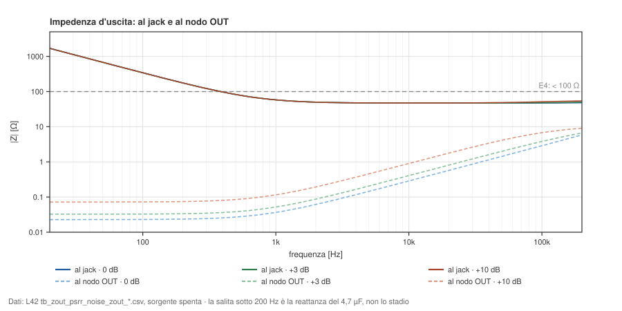
| Punto di misura | 20 Hz | 1 kHz | 20 kHz | 100 kHz |
|---|---|---|---|---|
| al jack · 0 dB | 1693 Ω | 57,9254 Ω | 47,0318 Ω | 47,2358 Ω |
| al jack · +3 dB | 1693 Ω | 57,9263 Ω | 47,0717 Ω | 48,015 Ω |
| al jack · +10 dB | 1693 Ω | 57,9304 Ω | 47,3322 Ω | 51,2012 Ω |
| al nodo OUT · 0 dB | 0,0229 Ω | 0,0366 Ω | 0,5724 Ω | 2,885 Ω |
| al nodo OUT · +3 dB | 0,0326 Ω | 0,052 Ω | 0,8102 Ω | 3,8054 Ω |
| al nodo OUT · +10 dB | 0,0722 Ω | 0,1155 Ω | 1,7755 Ω | 6,7686 Ω |
Deck spice/preamp/tb/tb_switch_v2.cir · dati docs/preamp/data/2026-09-27/L42/dopo/tb_switch_v2/
Modelli del costruttore: 1N4148, LS352, LSK489, MJE15032, MJE15033, MMBT5401, MMBT5551 · segnaposto scritti a mano: nessuno · rumore 1/f solo su LSK489, KF = 0 sugli altri (NC-004)
V2: l’anello non si apre mai commutando. Il deck modella K1 e K5 come contatti veri, con rimbalzi in chiusura e in apertura, e percorre ogni passaggio fra 0, +3 e +10 dB, compresi i due ordini in cui una coppia di relè può arrivare sul salto diretto. La previsione falsificabile: v(OUT) resta nell’inviluppo del regime a +10 dB in ogni istante.
| Finestra | v(OUT) max | v(OUT) min | Dentro l’inviluppo del +10 dB |
|---|---|---|---|
| regime a 0 dB | 0,4843 V | −0,5152 V | sì |
| regime a +3 dB | 0,6877 V | −0,7316 V | sì |
| regime a +10 dB | 1,5261 V | −1,6235 V | sì |
| regime a +10 dB, seconda volta | 1,5261 V | −1,6236 V | sì |
| 0 → +3 dB (K1) | 0,6877 V | −0,7316 V | sì |
| +3 → +10 dB (K5) | 1,5261 V | −1,6236 V | sì |
| +10 → +3 dB (K5) | 1,5261 V | −0,7316 V | sì |
| +3 → 0 dB (K1) | 0,6877 V | −0,5152 V | sì |
| 0 → +10 dB, K5 per primo | 1,5261 V | −1,6236 V | sì |
| +10 → 0 dB, K1 per primo | 1,5261 V | −1,3663 V | sì |
Inviluppo del regime a +10 dB: +1,5261 / −1,6236 V. Estremi sull’intera corsa di 70 ms, rimbalzi compresi: +1,5261 / −1,6236 V. La forma d’onda non è versionata; le finestre sono confrontate con le meas del log.
Deck spice/preamp/tb/tb_switch_v2_counterfactual.cir · dati docs/preamp/data/2026-09-27/L42/dopo/tb_switch_v2_counterfactual/
Modelli del costruttore: 1N4148, LS352, LSK489, MJE15032, MJE15033, MMBT5401, MMBT5551 · segnaposto scritti a mano: nessuno · rumore 1/f solo su LSK489, KF = 0 sugli altri (NC-004)
ADR-004 ha scartato il contatto in serie a Rf. Una decisione porta informazione solo se la disposizione scartata è mostrata fallire: con Rf aperto non esiste più controreazione, e l’uscita va a −13,8711 V, dove lo stadio non amplifica più niente.
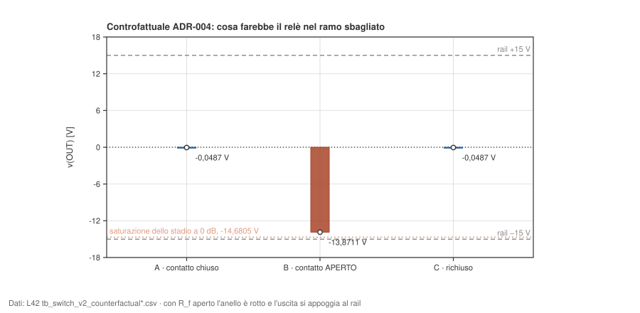
| Stato | Configurazione | v(OUT) | v(FB) |
|---|---|---|---|
| A | contatto CHIUSO, R_f = 1,50 kΩ | −0,048701 V | −0,015451 V |
| B | contatto APERTO, R_f = 1e12 Ω | −13,871080 V | −0,000000 V |
| C | richiuso, controprova di B | −0,048701 V | −0,015451 V |
C esiste per escludere che B sia un artefatto del solutore: A e C coincidono. La disposizione scelta commuta Rg verso massa, e i due rami di ADR-026 stanno in parallelo: a contatti aperti il guadagno è 1 e l’anello non si apre mai.
Deck docs/preamp/data/2026-09-25/L29d2/deck/tb_v2_l29d2.cir · dati docs/preamp/data/2026-09-25/L29d2/matrice/ · la matrice, sul banco generato di L29d2
Modelli del costruttore: 1N4148, LS352, LSK489, MJE15032, MJE15033, MMBT5401, MMBT5551 · segnaposto scritti a mano: nessuno · rumore 1/f solo su LSK489, KF = 0 sugli altri (NC-004)
Deck spice/preamp/tb/tb_v2_casopeggiore.cir · dati docs/preamp/data/2026-09-25/L29e/celle/ · le celle peggiori, sul deck generato dal sorgente (L29e)
Modelli del costruttore: 1N4148, LS352, LSK489, MJE15032, MJE15033, MMBT5401, MMBT5551 · segnaposto scritti a mano: nessuno · rumore 1/f solo su LSK489, KF = 0 sugli altri (NC-004)
Il mute ha due stadi. A monte, due LDR all’ingresso del blocco A abbassano la musica lungo il profilo v4 (ADR-038, ADR-039): la corrente dei LED segue una tabella log-lineare nella profondità d, percorsa in 6,5 s. Al jack, un relè per uscita in serie, geometria iii (ADR-044): comune sul lato del condensatore, NO sul jack, NC a massa, uno scarico su entrambi i lati. Il relè stacca il jack quando la musica è già giù.
V2 si giudica con tre grandezze (ADR-032, ADR-040): A, il gradino senza musica, all’inserzione e al rilascio; B2, il residuo al jack a mute inserito; soglia 100 µV di picco per entrambe. S, il salto di livello della musica in 100 ms, soglia 20 dB: il taglio si giudica sul salto, non sul residuo di un fit.
| Gruppo | Verdetti | A, peggiore | B2, peggiore | S, peggiore | Esito |
|---|---|---|---|---|---|
| 1 · cambio di guadagno | 78 | 0,17 µV gm0x10_lz_iii_c · mainjack | 8,715 µV gm10x3_20_iii_i · mainjack | 7,16 dB gm0x3_1k_iii_i · mainjack | regge |
| 2 · cambio di trim | 54 | 0,099 µV tm0x12_lz_iii_c · mainjack | 0,205 µV tm0x6_1k_iii_i · mainjack | 7,16 dB tm0x6_1k_iii_i · mainjack | regge |
| 3 · dispersione dell’LSK489 | 69 | 69,69 µV x01000_dpmaxmax_iii_c · mainjack | 7,365 µV x01000_dpmaxmax_iii_i · fixjack1 | — | regge |
| 4 · durata del mute | 40 | 0,032 µV mh20_lz_iii · mainjack | 8,715 µV mh01_20_iii · mainjack | 7,16 dB mh01_1k_iii · mainjack | regge |
| 5 · accensione | 12 | 4,416 µV on_r300p_iii · fixjack1 | — | — | regge |
253 verdetti su 253 reggono. Ogni verdetto è il peggiore sulle tre uscite; il dossier li ricalcola da analisi.csv e dal manifesto, con la regola di verdetto.py scritta di nuovo, e li confronta con verdetto.csv uno per uno. Le 18 grandezze delle celle peggiori, rifatte sul deck generato dal sorgente in L29e, coincidono con la matrice (scarto relativo massimo 0).
Deck spice/preamp/tb/tb_v2_casopeggiore.cir · dati docs/preamp/data/2026-09-27/L42/mute/ · la cella mh01_1k_iii e i suoi due riferimenti, rifatti oggi
Modelli del costruttore: 1N4148, LS352, LSK489, MJE15032, MJE15033, MMBT5401, MMBT5551 · segnaposto scritti a mano: nessuno · rumore 1/f solo su LSK489, KF = 0 sugli altri (NC-004)
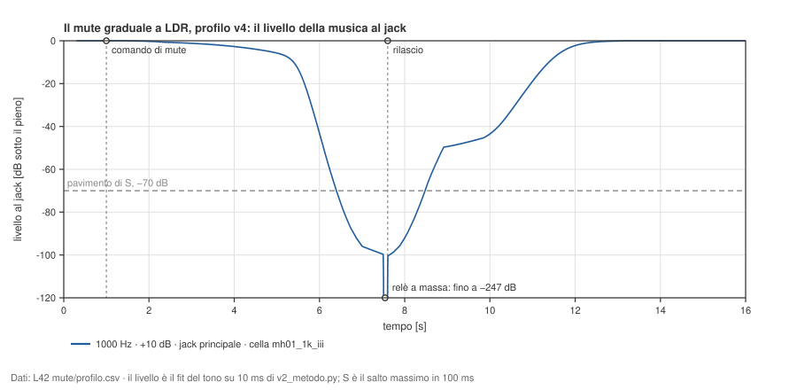
Musica a 1000 Hz a fondo scala, +10 dB, sul jack principale; comando di mute a 1 s, rilascio a 7,6 s. Il salto più grande in 100 ms vale 7,16 dB scendendo e 5,45 dB risalendo, contro 20 dB. Il dossier li ricava dalla curva e li confronta con quelli che v2_metodo.py ha scritto per la stessa corsa; le 36 righe dell’analisi di oggi coincidono con quelle di L29e.
tb_v2_casopeggiore.cir). ADR-050 ha portato la cima del firmware a 12 mA e ha rifatto E3 ed E5 (sezione 6), non questa matrice: S con la cima nuova non è misurato.Guadagno e trim si cambiano solo a mute inserito, e il guadagno si tiene da sé (ADR-041, strada B di ADR-030): due relè ausiliari in autoritenuta sui relè del guadagno, un polo ponte per bobina sul rotativo, i LED dagli ausiliari. Il permissivo ha un comando proprio, sfasato dopo i jack (ADR-045); comandi e LED stanno su header verso il pannello (ADR-028).
Netlist circuits/preamp/preamp_audio.net · scripts/check_relay_safe_state.py (il 2e di run_tests.sh), rieseguito da questa pagina
| Relè | Parte e sigla | Ruolo |
|---|---|---|
| K1 | G6K-2F-Y GAIN | gain |
| K2 | G6K-2F-Y MUTE1 | mute |
| K3 | G6K-2F-Y MUTE2 | mute |
| K4 | G6K-2F-Y MUTE3 | mute |
| K5 | G6K-2F-Y GAIN10 | gain |
| K6 | G6K-2F-Y PERMIT | permit |
| K7 | G6KU-2F-Y TRIM1 | trim |
| K8 | G6KU-2F-Y TRIM2 | trim |
| K9 | G6KU-2F-Y SPIA1 | spia |
| K10 | G6KU-2F-Y SPIA2 | spia |
| K11 | G6K-2F-Y HOLD3 | hold |
| K12 | G6K-2F-Y HOLD10 | hold |
Sulla netlist di oggi il 2e prova per raggiungibilità: 16 stati dei bistabili del trim fuori mute, nella finestra del permissivo e in mute; per il guadagno (K1+K11, K5+K12, selettore SW2) 9 coppie stato/posizione e 3 trasferimenti con la manopola allo stato. Che il controllo sappia cadere lo dicono i falsi: L35, 15 netlist sabotate, tutte respinte per la ragione voluta; L36, 12 netlist sabotate, tutte respinte per la ragione voluta.
Dati docs/preamp/data/2026-09-25/L36/corsa/ · un deck ngspice per cella, scritto da corsa.py: bobine, contatti e ausiliari, nessun transistor; il modello del relè è dichiarato nel suo docstring
| Variante | Celle | Cade al rilascio | Cade all’inserimento |
|---|---|---|---|
| il progetto, col polo ponte | 480 | 0 | 0 |
| senza polo ponte | 480 | 373 | 387 |
1440 corse: induttanza della bobina, buco del permissivo, resistenza, soglia di rilascio e tensione dei relè spazzate. La corsa è chiusa per struttura, dal polo ponte: il datasheet non dà la dinamica della bobina, e il modello del relè è dichiarato, non del costruttore. I conteggi sono ricontati da corsa.csv e confrontati con sintesi.txt.
Deck spice/preamp/tb/tb_v3_overload.cir · dati docs/preamp/data/2026-09-27/L42/dopo/tb_v3_overload/
Modelli del costruttore: 1N4148, LS352, LSK489, MJE15032, MJE15033, MMBT5401, MMBT5551 · segnaposto scritti a mano: nessuno · rumore 1/f solo su LSK489, KF = 0 sugli altri (NC-004)
V3, recupero dalla saturazione: +10 dB, 1 kHz, pilotato oltre il clipping per alcuni cicli e poi riportato a un livello basso.
| Grandezza | Valore |
|---|---|
| v(OUT) massima, in clipping | +13,228 V |
| v(OUT) minima, in clipping | −13,787 V |
| v(JACK) a fine corsa, 20 ms | −10,72 mV |
Deck spice/preamp/tb/tb_mute_corto.cir · dati docs/preamp/data/2026-09-27/L42/dopo/tb_mute_corto/
Modelli del costruttore: 1N4148, LS352, LSK489, MJE15032, MJE15033, MMBT5401, MMBT5551 · segnaposto scritti a mano: nessuno · rumore 1/f solo su LSK489, KF = 0 sugli altri (NC-004)
Criterio di ADR-021: Tj = 60 °C + Pmedia · RθJA ≤ 125 °C, con RθJA = 62,5 °C/W per i MJE in TO-220. Casi: normale, mute, corto su ciascuna uscita, apparecchio spento su una fissa; manopola e ampiezza spazzate, 1 kHz e 20 kHz. Il dispositivo d’uscita peggiore per blocco e modo:
| Blocco | 0 dB | +3 dB | +10 dB | Esito |
|---|---|---|---|---|
| Blocco A | 296,562 mW · 78,5 °C | 296,278 mW · 78,5 °C | 296,282 mW · 78,5 °C | conforme |
| Buffer fissa 1 | 321,956 mW · 80,1 °C | 321,998 mW · 80,1 °C | 321,985 mW · 80,1 °C | conforme |
| Buffer fissa 2 | 321,956 mW · 80,1 °C | 321,96 mW · 80,1 °C | 321,933 mW · 80,1 °C | conforme |
| Blocco B | 321,959 mW · 80,1 °C | 355,492 mW · 82,2 °C | 370,841 mW · 83,2 °C | conforme |
Classe A sui percorsi ascoltabili (ADR-023): 0 righe su 398 ne escono. La 47 Ω dell’uscita principale dissipa al massimo 0,153 / 0,296 / 0,947 W a 0 / +3 / +10 dB, e va dimensionata di conseguenza.
Script docs/preamp/data/2026-09-26/L30/termica/stima_telaio.py · stima calcolata, non simulata; rieseguito da questa pagina
P5 e ADR-021 chiedono 60 °C nel telaio, dentro un vano di libreria chiuso, con la stanza a 35 °C. La scheda audio non è sola nel telaio: la stima somma tutto l’apparecchio (ADR-047).
| Dissipazione | nominale | minima | massima |
|---|---|---|---|
| scheda audio (8 blocchi) | 7,94 W | 7,94 W | 7,94 W |
| regolatori +-15 V | 2,65 W | 1,85 W | 3,71 W |
| raddrizzatore | 0,48 W | 0,42 W | 0,53 W |
| bobine dei rele' e LED | 0,88 W | 0,88 W | 0,88 W |
| regolatore di VRELAY | 0,70 W | 0,52 W | 0,88 W |
| LDR, sorvegliante, temporizzatore | 0,25 W | 0,15 W | 0,35 W |
| trasformatore | 2,50 W | 1,50 W | 3,50 W |
| totale | 15,39 W | 13,27 W | 17,78 W |
| Gioco del vano | Caso | P | salto del telaio | salto del vano | aria nel telaio | 60 °C |
|---|---|---|---|---|---|---|
| 3 cm | nominale | 15,4 W | 7,4 °C | 8,4 °C | 50,8 °C | conforme |
| 3 cm | peggiore | 17,8 W | 10,4 °C | 9,8 °C | 55,2 °C | conforme |
| 5 cm | nominale | 15,4 W | 7,4 °C | 6,7 °C | 49,1 °C | conforme |
| 5 cm | peggiore | 17,8 W | 10,4 °C | 7,7 °C | 53,1 °C | conforme |
| 10 cm | nominale | 15,4 W | 7,4 °C | 4,1 °C | 46,5 °C | conforme |
| 10 cm | peggiore | 17,8 W | 10,4 °C | 4,8 °C | 50,2 °C | conforme |
| 20 cm | nominale | 15,4 W | 7,4 °C | 2,0 °C | 44,4 °C | conforme |
| 20 cm | peggiore | 17,8 W | 10,4 °C | 2,4 °C | 47,8 °C | conforme |
| all'aria | nominale | 15,4 W | 7,4 °C | 0,0 °C | 42,4 °C | conforme |
| all'aria | peggiore | 17,8 W | 10,4 °C | 0,0 °C | 45,4 °C | conforme |
Il vano chiuso regge i 60 °C nel caso peggiore con almeno 0,5 cm di gioco per lato. La scheda audio della stima coincide coi rail di tb_op di oggi: 8 × 15 V × (|i+| + |i−|) = 7,9452 W. La conferma è la temperatura nel telaio del prototipo (ADR-021, «Da riaprire se»).
Solo i requisiti che queste misure toccano. Il resto non è qui perché non è ancora stato misurato, non perché sia soddisfatto.
| Req. | Chiede | Misurato | Esito |
|---|---|---|---|
| E1 | guadagno nominale 0 dB | −0,0070 dB a 1 kHz | conforme |
| E2 | +3 dB (±0,1) e +10 dB (9,5–10,5) | +3,0393 / +9,9627 dB a 1 kHz | conforme |
| E3 | ≥ 100 kΩ al connettore, ogni posizione del trim | min 110,715 kΩ, LDR del mute comprese | conforme |
| E4 | Zout < 100 Ω in banda, esclusa la reattanza del cap, costante col volume | Re(Z) max al jack 60,0864 Ω principale · 53,1186 Ω fisse · dispersione su trim × attenuatore ≤ 0 Ω | conforme su tre uscite, ogni posizione di trim e attenuatore |
| E5 | rumore in uscita < 10 µV RMS | catena ≤ 5,049 µV, LDR comprese | sotto soglia, ma 1/f solo sulla coppia d’ingresso — NC-004 aperta |
| E6×E2 | 2,7 V RMS d’ingresso a +10 dB | M1 +6,48 dB col trim a −6 dB · +0,48 dB a trim 0 | margine col trim (ADR-015, ADR-027); legenda di pannello ancora da fare (NC-009) |
| V1 | margine ≥ 60° su tutta la matrice (ADR-019, ADR-024) | minimo 62,076° · Blocco B · 0 dB | conforme |
| V2 | l’anello non si apre mai commutando | 10 finestre su 10 nell’inviluppo · controfattuale a −13,871 V | conforme |
| V2 | il mute: A e B2 ≤ 100 µV di picco, S ≤ 20 dB in 100 ms (ADR-032, ADR-040) | 253 verdetti su 253 · S massimo 7,16 dB · LED a 19,999 mA | conforme con la cima del deck; S a 12 mA non misurato |
| V3 | recupero dalla saturazione | clipping +13,228 / −13,787 V · −10,72 mV al jack a fine corsa | impaginato dal CSV, senza controllo incrociato |
| P7 | corto e mute a tempo indefinito, Tj ≤ 125 °C | Tj massima 83,2 °C · 0 righe ascoltabili fuori classe A | conforme |
| P5 | 60 °C nel telaio, vano chiuso, stanza a 35 °C (ADR-021, ADR-047) | 55,2 °C col gioco di 3 cm · 17,78 W | stima calcolata, da confermare sul prototipo |
| V4 | THD/THD+N | assente | non misurata in questo dossier |
Ogni sezione dichiara il deck, la cartella dei dati e i modelli, e questi ultimi sono letti dagli .include del deck: un modello è «del costruttore» se sta in models/ con la sua .provenance.json, «segnaposto» se sta in spice/preamp/placeholder_devices.lib.
| Modello istanziato | Parte | File | Tipo | KF |
|---|---|---|---|---|
D1N914 | 1N4148 | models/diodes/1n4148.lib | costruttore | 0 |
LS350 | LS352 | models/bjt_pnp/ls350.lib | costruttore | 0 |
LSK489A | LSK489 | models/jfet/lsk489.lib | costruttore | 0,0009 |
MMBT5401 | MMBT5401 | models/bjt_pnp/mmbt5401.lib | costruttore | 0 |
MMBT5551 | MMBT5551 | models/bjt_npn/mmbt5551.lib | costruttore | 0 |
QMJE15032 | MJE15032 | models/bjt_npn/mje15032.lib | costruttore | 0 |
QMJE15033 | MJE15033 | models/bjt_pnp/mje15033.lib | costruttore | 0 |